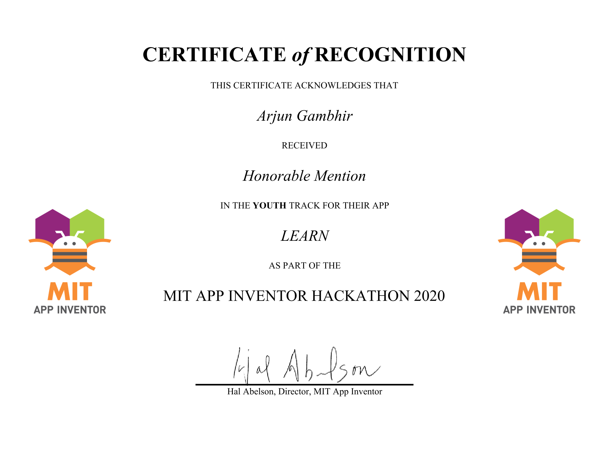

LEARN
Video
Catch 10-year-old me recording my first research video—books behind me, T-shirt inside out, confidence intact.
About
My inspiration
I built LEARN when I was 10 years old, during the 2020 lockdown.
Introduction
At the time, schools had moved online, but not every student could actually attend online classes. Some did not have stable internet, some had limited access to devices, and many younger children were suddenly expected to keep learning from home without the same support they had in school.
LEARN was my first attempt to solve a real problem I could see around me. It was a simple English-learning app designed for children who needed to study at home without depending on the internet. It was not a high-tech app, and it was not meant to be complicated. Its purpose was very clear: help children keep learning when normal school was no longer accessible.
Building for access
Looking back, what makes LEARN important to me is not just the app itself, but what it represented. It was the first time I realised that STEM could be used to help people in my own community. Understanding that a 10-year-old could make an app that might impact others was honestly crazy to me at the time.
That project changed how I saw technology. It made me believe that building things was not only about coding or winning competitions—it could be about noticing a problem and trying to do something useful with the skills you have.
Recognition pathway
LEARN received an Honourable Mention at the MIT App Inventor 2020 Global AI Hackathon, but more importantly, it became the start of STEM for good for me. I never looked back after this, and it still holds a special place in my heart.
Recognition
